| 7.0 Notation |
| This section contains definitions of all the symbols used in the report, along with their associated units. |
| a |
factor in the LS-factor equation |
unitless |
| aj |
coefficent for Blaney-Criddle PET function for the j-th month |
mm d-1 |
| A |
horizontal cross-sectional area of the contaminant source zone |
cm2 |
| Adist |
aggregate size distribution |
mm |
| Aloss |
average-annual soil loss |
t ha-1 yr-1 |
| As |
surface area of the external boundary of an ISS waste form |
cm2 |
| Asg |
total surface area of cracked glass in an ISV waste form |
cm2 |
| Asgo |
initial total surface area of cracked glass in an ISV waste form |
cm2 |
| bj |
coefficient for Blaney-Criddle PET function for the j-th month |
unitless |
| cj |
correction factor for the Penman method with correction factor for the j-th month |
unitless |
| csky |
mean sky cover for a 12-hr period (tenths) |
unitless |
| csky(j) |
mean sky cover for the j-th month obtained from the LCD (tenths) |
unitless |
| cvk |
von Karman constant |
unitless |
| Cfact |
vegetative cover factor |
unitless |
| Coi |
concentration of contaminant i in the NAPL phase |
g cm-3 or Ci cm -3 |
| Csi |
concentration of contaminant i in the sorbed phase |
g g-1 or Ci g-1 |
| Cti |
overall total concentration of contaminant i in a bulk volume of source zone |
g cm-3 or Ci cm-3 |
| Ctio |
value of overall total concentration of contaminant i used at the beginning of a time step in the bounding calculation for volatization |
g cm-3 or Ci cm-3 |
| Cvi |
concentration of contaminant i in the vapor phase |
g cm-3 or Ci cm-3 |
| 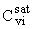 |
saturated vapor concentration of contaminant i |
g cm-3 or Ci cm-3 |
| Cwi |
concentration of contaminant i in the vapor phase |
g cm-3 or Ci cm-3 |
| 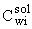 |
aqueous solubility if contaminant i |
g cm-3 or Ci cm-3 |
| d12rd |
12-hr snowmelt from radiation |
cm |
| d24m |
daily snowmelt during a rainfall event |
cm |
| d6c |
6-hr snowmelt from convection |
cm |
| d6vc |
6-hr snowmelt from vapor condensation |
cm |
| dcj |
average monthly snowmelt from convection for the j-th month |
cm |
| dfmax |
peak flow depth |
cm |
| dp |
depth of the pond |
cm |
| dpr |
daily precipitation depth |
cm |
| dpraj |
precipitation adjusted for snowmelt for the j-th month |
cm |
| dpruj |
unadjusted precipitation depth for the j-th month obtained from the LCD |
cm |
| drdj |
average monthly snowmelt from radiation for the j-th month |
cm |
| dmj |
snowmelt from the rainfall for the j-th month |
cm |
| droj |
overland runoff for the j-th month |
cm |
| dsj |
total snowmelt for the j-th month |
cm |
| dvcj |
average monthly snowmelt from vapor condensation for the j-th month |
cm |
| Dgi |
effective diffusion coefficient of contaminant i within an ISS waste form |
cm2 yr-1 |
| Dvi |
effective vapor diffusion coefficient of contaminant i in soil |
cm2 yr-1 |
| 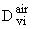 |
vapor diffusion coefficient of contaminant i in air |
cm2 yr-1 |
| ea |
actual vapor pressure of the air |
mbar |
| eaj |
mean actual vapor pressure of the air for the j-th month |
mbar |
| esj |
saturation vapor pressure for the j-th month |
mbar |
| E |
volumetric water erosion rate |
cm yr-1 |
| Eaj |
actual evapotranspiration for the j-th month |
cm |
| Epj |
potential evapotranspiration rate for the j-th month |
mm d-1 |
| Elim |
annual average limited emission rate per unit surface area |
g yr-1 |
| Epav |
emission rate for traffic on paved roads |
g vehicle-1 km-1 |
| Epot |
erosion potential |
g m-2 |
| Eroad |
emission rate from road surfaces |
g vehicle-1 km-1 |
| Eunlim |
annual average unlimited emission rate per unit surface area |
g yr-1 |
| Eunpav |
emission rate for traffic on unpaved roads |
g vehicle-1 km-1 |
| Eveh |
emission rate for suspension due to vehicular travel |
g yr-1 |
| Ewind |
total emission rate for wind erosion |
g yr-1 |
| Ewm |
emission rate for wind/mechanical suspension |
g yr-1 |
| fcr |
fraction of soil surface that is crusted |
unitless |
| fd |
frequency of mechanical disturbances |
month-1 |
| fhj |
factor for the j-th month to correct the wind speed mearsurement to a 2-m measurement height |
unitless |
| fj |
coefficient for Blaney-Criddle PET function for the j-th month |
mm day-1 |
| fne |
nonerodible elements correction factor |
unitless |
| fp |
particle size parameter |
unitless |
| fPE |
Thornthwaite's Precipitation-Evaporation (PE) Index |
unitless |
| fperm |
profile-permeability class factor |
unitless |
| fv |
fraction of surface covered with vegetation |
unitless |
| fwj |
temperature-related weighting factor for the j-th month |
unitless |
| h |
thickness of the contaminant source zone |
cm |
| h0 |
elevation of LCD station |
m |
| h1 |
elevation of actual site |
m |
| 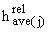 |
average percent relative humidity for the j-th month |
unitless |
| hin |
wind speed measurement height above ground |
m |
| 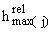 |
maximum percent relative humidity for the j-th month |
unitless |
| 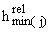 |
minimum percent relative for the j-th month |
unitless |
| href |
reference height above the soil surface |
m |
| Hi |
Henry's Law constant for contaminant i (press./concen. basis) |
atm m3 mol-1 |
| i |
index on contaminant |
unitless |
| Ij |
leachate generation for the j-th month |
cm |
| Imax(j) |
maximum amount for moisture available for percolation in the j-th month |
cm |
| Ipot(j) |
potential percolation for the j-th month |
cm |
| j |
index on month |
unitless |
| k |
index on contaminants other than contaminant i |
unitless |
| k1-k4 |
the four intermediate terms in the Runge-Kutta calculations |
--------- |
| kig |
gas-phase mass transfer coefficient for contaminant i
at a pond surface |
cm yr-1 |
| kil |
liquid-phase mass transfer coefficient for contaminant i at pond surface |
cm yr-1 |
| K1 |
theoretical constant in equation for snowmelt by vapor condensation |
cm s mbar-1 m-1 |
| K2 |
heat exchange coefficient as a function of elevation |
cm s m-1 oC-1 |
| Kdi |
linear equilibrium sorption coefficient for contaminant i to a solid sorbent |
cm3 g-1 |
| Kfact |
soil erodibility factor |
t ha-1 yr-1 per unit Rfact |
| KHi |
modified "Henry's Law" constant for contaminant i (concen./ concen. basis) for partitioning between aqueous solution and vapor |
unitless |
| 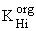 |
modified "Henry's Law" constant for contaminant i (concen./ concen. Basis) for partitioning between NAPL and vapor |
unitless |
| Kli |
overall mass transfer coefficient from a liquid phase to the atmosphere for contaminant i, expressed in terms of the liquid-phase concentration |
cm yr-1 |
| Kowi |
octanol-water partition coefficient for contaminant i |
unitless |
| Krd |
snowmelt occurring by radiation in a half-day in clear weather |
cm |
| Krdj |
average snowmelt occurring by radiation in a half-day in clear weather for the j-th month |
cm |
| 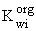 |
analogue of the modified "Henry's Law" constant for contaminant for partitioning between NAPL and aqueous phases |
unitless |
| Lr |
surface roughness length |
m |
| Lroad |
distance of travel over contaminant surface |
km |
| Lslope |
slope length |
cm |
| Lx |
dimension of the contaminated aquifer source zone parallel to flow |
cm |
| Ly |
horizontal dimension of the contaminated aquifer source zone perpendicular to flow |
cm |
| Lz |
vertical dimension of the contaminated aquifer source zone perpendicular to flow |
cm |
| mLS |
exponent in the LS-factor equation |
unitless |
| Mi |
total mass or activity of contaminant i in the source zone |
g or Ci |
| Mio |
initial total mass or activity of contaminant i in the source zone |
g or Ci |
| Mio' |
total mass or activity of contaminant i in the source zone at the time the zone was subjected to ISV remediation |
g or Ci |
| Mio" |
total mass or activity of contaminant i in the source zone at the time the zone was subjected to ISS remediation |
g or Ci |
| Mi,p |
total mass or activity of the p-th member of the decay/degradation chain that starts with contaminant i |
g or Ci |
| Mmi |
molecular weight of contaminant i |
g mol-1 |
| Mveh |
mean vehicle weight |
Mg |
| n |
time step index used in the Runge-Kutta equations |
unitless |
| nc |
total number of contaminants in the source zone |
unitless |
| ncn |
total number of constituents in the NAPL phase |
unitless |
| ndj |
number of days in the j-th month |
unitless |
| np |
number of day with at least 0.254 mm (0.01 in) of precipitation per year |
unitless |
| npj |
number of precipitation events during the j-th month |
unitless |
| nscs |
SCS Curve Number used for runoff calculations |
unitless |
| nv |
average number of vehicles traveling over the contaminated surface per day |
vehicle d-1 |
| nw |
mean number of wheels on a vehicle |
unitless |
| pj |
mean daily percentage of total annual daytime hours as a function latitude for the j-th month |
unitless |
| P2,6 |
2-year recurrence interval, 6-hr duration rainfall depths |
cm |
| Pclay |
percent clay |
unitless |
| Pfact |
erosion control practice factor |
unitless |
| Pom |
percent organic matter |
unitless |
| Psand |
percent sand |
unitless |
| Psilt |
percent silt plus very fine sand |
unitless |
| qw |
Darcy flux density of water flowing through the aquifer or vadose zone |
cm yr-1 |
| Qover |
total flux of aqueous solution, sediment, and NAPL globules as pond runoff |
cm3 yr-1 |
| Qw |
volumetric flux of water flowing through the aquifer source zone or vadose zone source zone, or out of the bottom of a pond/surface impoundment source zone |
cm3 yr-1 |
| r |
index of contaminants other than contaminant i |
unitless |
| rg |
mass dissolution rate of glass in an ISV waste form per surface area |
g yr-1 cm-2 |
| rsun(j) |
ratio of actual to maximum possible sunshine hours for the j-th month |
unitless |
| R |
Universal gas constant |
atm L mol-1 K-1 |
| Raj |
extraterrestrial radiation, in equivalent evaporation for the j-th month |
mm d-1 |
| Rfact |
rainfall erosivity factor |
(100m)(t ha-1) (cm yr-1) |
| Ri |
retardation factor, or phase apportionment factor, for contaminant i |
unitless |
| Rnj |
net radiation, in equivalent evaporation, for the j-th month |
mm d-1 |
| Rnlj |
net longwave radiation, in equivalent evaporation for the j-th month |
mm d-1 |
| Rnsj |
net shortwave radiation, in equivalent evaporation, for the j-th month |
mm d-1 |
| Rsj |
solar radiation, in equivalent evaporation, for the j-th month |
mm d-1 |
| S |
volumetric wind suspension rate |
cm yr-1 |
| Sfact |
slope length and steepness factor |
unitless |
| Sm(j) |
soil moisture storage for the j-th month |
cm |
| Sslope |
slope gradient (in percent) |
unitless |
| Sstruc |
soil structure index |
unitless |
| t |
time since initial condition of the source zone |
yr |
| t1/2i |
decay/degradation half life of contaminant i in any phase |
yr |
| tn |
value of time equal to nDt |
yr |
| T |
absolute temperature |
K |
| T12 |
average 12-hr temperature |
oC |
| T24 |
average daily air temperature |
oC |
| T6 |
average 6-hr temperature |
oC |
| Taj |
adjusted average monthly temperature at the actual site for the j-th month |
oC |
| Tuj |
unadjusted average monthly temperature at the LCD station for the j-th month |
oC |
| 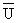 |
average wind speed |
m s-1 |
| U6,15 |
average 6-hr wind velocity measured at 15m (50ft) above ground |
m s-1 |
| Uc |
critical wind speed at the reference height above the soil surface |
m s-1 |
| Ud2j |
mean monthly daytime wind speed at a 2-m height for the j-th month |
m s-1 |
| Uf |
threshold friction velocity |
m s-1 |
| 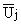 |
average wind speed at a reference height above the soil surface |
m s-1 |
| Umax |
maximum wind speed at a reference height above the soil surface |
m s-1 |
| 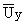 |
mean annual wind speed |
m s-1 |
| vveh |
mean vehicle speed |
km hr-1 |
| V |
overall volume of the contaminated source zone |
cm3 |
| Vg |
volume of cracked glass in an ISV waste form |
cm3 |
| Vgo |
initial volume of cracked glass in an ISV waste form |
cm3 |
| wpj |
accumulated potential water loss for the j-th month |
cm |
| WWHC |
water-holding capacity of the soil |
cm |
| Xoi |
mole fraction of contaminant i in the NAPL phase |
unitless |
| z |
distance from the initial position of the soil surface to the top of the source zone at time t |
cm |
| zb |
distance from the initial position of the soil surface to the top of the source zone at any time |
cm |
| zt |
distance from the initial position of the soil surface to the initial position of the top of the source zone (i.e., initial thickness of clean layer) |
cm |
| a |
land surface reflectiveness correction parameter |
unitless |
| ß |
bulk density of the solid-sorbent phase |
g cm-3 |
| ßs |
soil bulk density for an aquifer or vadose zone |
g cm-3 |
| ßss |
concentration of suspended sediment in the pond water |
g cm-3 |
| Dt |
time step size in Runge-Kutta calculations |
yr |
| li |
first-order decay/degradation coefficient for contaminant i |
yr-1 |
| li,k |
first-order decay/degradation coefficient for the k-th member of the decay/degradation chain that starts with contaminant i |
yr-1 |
| rg |
density of glass in an ISV waste form |
g cm-3 |
| rli |
density of contaminant i in the pure liquid form
|
g cm-3 |
| s |
constant in the estimation equation for Rnlj |
unitless |
| qa |
volumetric air content of the soil |
unitless (cm3 cm-3) |
| qw |
volumetric water content of the soil |
unitless (cm3 cm-3) |
| qt |
total porosity of the soil |
unitless (cm3 cm-3) |
| |
|
|
| |
|
|
| |
|
|